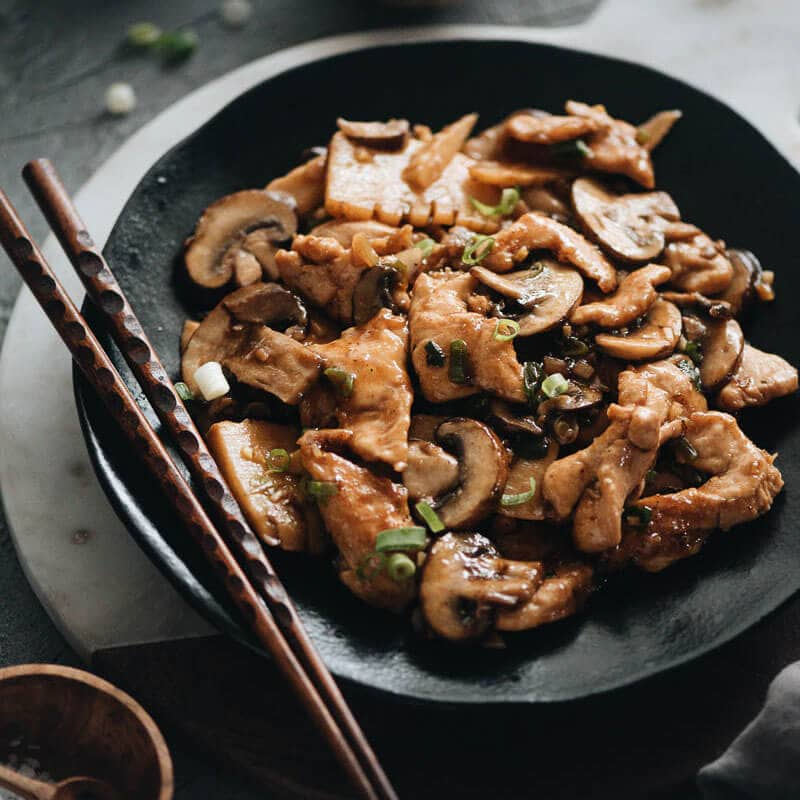

Butter Mochi

Description
Basically a double protein dish! Silky, Salty, Umami!
Ingredients
- 10 oz. (300 g) boneless skinless chicken breast (or thighs), sliced to 1/4” (5mm) thickness (about 1 chicken breast or 2 thighs)
-
Marinade
- 1 tablespoon soy sauce
- 1 tablespoon Shaoxing wine (or dry sherry)
- 1 tablespoon cornstarch
-
Sauce
- 3 tablespoons oyster sauce
- 2 tablespoons Shaoxing wine (or dry sherry)
- 2 tablespoons soy sauce
- 1/3 cup chicken stock
- 2 teaspoons sugar
- 2 teaspoons cornstarch
-
Stir Fry
- 2 to 3 tablespoons peanut oil (or vegetable oil)
- 1/2 lbs (225 g) mushrooms (white or baby portabella)
- 1 cup sliced bamboo shoots , drained
- 3 cloves garlic , chopped
- 2 teaspoons ginger , minced
- 2 green onions , chopped
Steps
- Combine chicken and all the marinade ingredients in a big bowl. Stir to mix well. Let marinate for 15 minutes while preparing the other ingredients.
- Combine all the sauce ingredients in a medium-sized bowl. Stir to mix well.
- Heat oil in a large skillet over medium-high heat until hot. Spread the chicken in the skillet in a single layer. Sear until the bottom turns golden without moving it, 1 minute or so. Stir and flip to cook the other side, until turns golden, another minute or so. Transfer the cooked chicken pieces to a big plate and set aside.
- Add the remaining 1 tablespoon oil and the mushrooms. Cook and stir until the mushrooms are cooked through and the liquid evaporated.
- Add the bamboo shoots, garlic, ginger, and onion. Drizzle with a bit more oil if the pan looks dry. Stir and cook for a minute.
- Stir the sauce again to thoroughly dissolve the cornstarch and pour it into the pan. Stir a few times until the sauce thickens.
- Add the chicken back into the skillet. Stir to coat everything well with the sauce. Immediately transfer everything to a big plate.
- Serve hot over steamed rice as a main dish.
Source/Reference
Original Recipe from...
Go back!